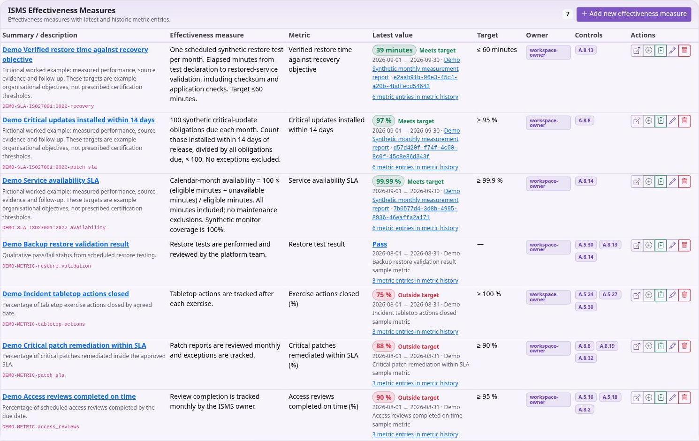

Using KEEN
Context, objectives and ISMS records
Chapter 8 of 15
Context and objectives
PESTLE(E) and interested parties
Use PESTLE(E) to record external and organisational issues through the available lenses. Link each relevant issue to business processes and framework clauses. Explain relevance and impact so the record supports scope and management-system decisions. Review the issues when the organisation or its environment changes; sample them into an audit where useful.
Interested Parties records the people and organisations whose needs affect the management system. Record the nature of their interest, associated controls and planned communications, including method, events or frequency. Link the party to relevant clauses and other available records. Keep stakeholder expectations distinct from evidence that an obligation has been met.
Organisational context: PESTLE(E) and interested parties
PESTLE(E) records political, economical, social, technological, legal, environmental and ethical issues. Describe the issue and rationale, choose its lens, and link relevant business processes and framework clauses with an appropriate relevance level. A change in law, dependence on a key supplier or a new technology can each provide context for risks and objectives.
Interested Parties records who has a need or expectation and the nature of that interest. Record planned communications, including method, relevant events or frequency, and link applicable controls or clauses. A customer expectation is context; a completed review or signed agreement may provide evidence of meeting it. Revisit both lists during management review and sample the relevant records into audits where useful.
Define objectives you can evaluate
Open ISMS → Objectives. Enter the requirement and intended goal, then identify the owner, metric and completion cadence (daily through annually, or as required). Explain the completion method and evaluation method separately: doing the work and checking whether it achieved the goal are different activities.
Use Resource users and Resource Requirements text to describe who and what are needed. Link relevant controls and clauses. Save the objective and inspect its detail page and changelog. When the objective is reviewed, compare its intended metric and evaluation method with actual effectiveness observations and meeting decisions.
Example: requirement: tested recoverability of essential systems; goal: restore a representative service within the agreed recovery objective. Completion method: perform the documented exercise. Evaluation method: compare measured recovery time, integrity checks and outstanding issues with the agreed criteria. Use the results of your own restore tests when assessing an actual system.
Manage the ISMS
Maintain the ISMS
ISMS brings the management-system records together. Objectives describe intended outcomes. Link them to the appropriate controls, owners and effectiveness measures. Measures describe how effectiveness is assessed; metrics are the dated observations or scores used to assess a measure.

Review the measurement method, target and source before adding a metric. Some metrics are received through configured webhooks. Automatic zero-value behaviour, where configured, is specific to the measure and should be interpreted as part of its method, with source coverage checked separately.
Policies and processes can be maintained as document records with supporting links and associations. The Documents workspace supports folders, types, tags, rich-text content, version history and comments. Save substantive changes as a new content version and review the history when establishing which policy wording was in force. Concurrent edits can require a reload to reconcile another person’s changes.
Assets represent the resources your organisation manages. Keep ownership, organisation relationships and relevant risks current. The organisation chart records roles and reporting relationships. The Access Matrix records who or which role should have access to an asset and at what level; it records intended access. Apply grants and revocations in the external system.
Application Configuration records help document relevant application settings. Minutes of Meetings records decisions, discussion and attendance, including people who do not have KEEN accounts. Link decisions to objectives, risks, controls and follow-up work where the screen supports those relationships.
People and vendors
Open People & vendors to maintain personnel and supplier assurance. A person does not need a KEEN account. Record their optional account, organisation role and assets, then add assurance records such as training, screening or policy acknowledgement. Each assurance record can include a category, requirement, status, completion and expiry dates, authoritative source and evidence link.
Vendor records contain supplier details and associated assets. An asset has one supplying vendor: assigning it to another vendor moves that relationship. Review the effect before saving. Use these records to organise completed checks and link their authoritative source evidence.
Meetings and decisions
Record decisions in meeting minutes
In ISMS → Minutes of Meetings, set title, date and optional start/end times. Select People attending and People apologising. If someone is missing, enter their name and optional email and use the offered action to create a Person for future use. Existing KEEN-user attendee fields remain available for older account-based records.
Select supporting ISMS documents and add external links with meaningful titles. Write agenda, minutes and decisions in the rich-text editor; identify responsible people and intended follow-up dates in the notes. Link relevant controls and clauses, save, and inspect the detail page and changelog.
For a management review, useful inputs include current risks and treatment, measure trends, audit findings, objectives, changes in interested parties and overdue work. Record actual decisions and update the affected records afterwards. Update the risk owner, treatment status or objective in its own record after recording the decision in minutes.